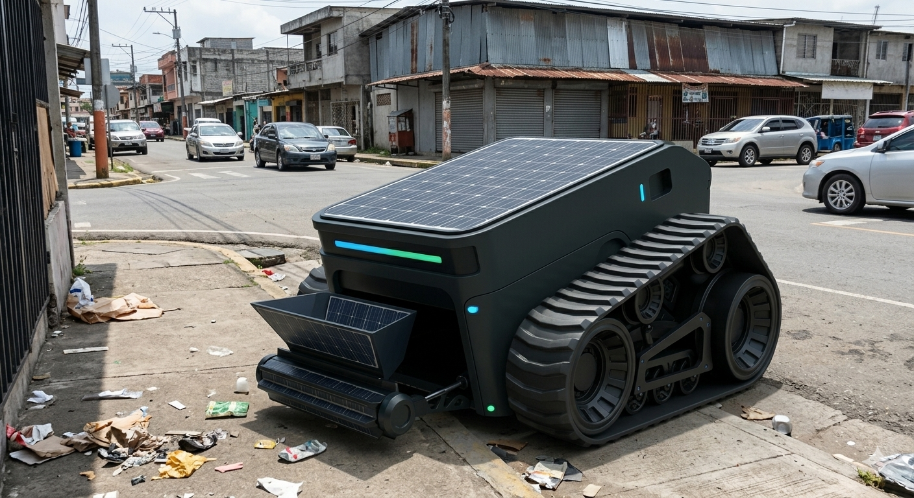

// The Architecture
The Aegis System
Three integrated phases form a closed-loop mechatronic ecosystem that collects, processes, and converts urban waste into clean energy.

PHASE I
The Ravens
Aerial Intelligence Layer
AI-equipped drones that scan San Miguelito's inaccessible zones and map real-time waste hotspots. In deep valleys where GPS is unreliable, Ravens double as LoRaWAN signal repeaters — forming a private mesh network that keeps every ground unit connected at all times.
- DJI / Skydio AI-equipped airframes
- LoRaWAN mesh network — GPS-denied environment coverage
- Real-time thermal + visual waste hotspot mapping
- Autonomous return-to-base + inductive charging
- Route optimization relay for Havoc ground units

PHASE II
The Havoc-S&S
All-Terrain Electric Collection Workhorse
A fully electric autonomous ground unit built for terrain no vehicle has reached before. Spider-Tracks, dual-chamber waste processing, and an 8-hour LiFePO₄ battery — all in one compact workhorse.
- 48V / 20Ah LiFePO₄ — 960Wh · 8 hrs endurance
- 2× 750W brushless DC hub motors — one per track
- 90 min recharge via Principium inductive pad
- Slot A: 2HP macerator → bio-slurry · Slot B: 3,000N compactor
- Spider-Track drive — stairs, gravel, inclines up to 35°
PHASE III
The Algae Biotank
Circular Energy Conversion
High-density Chlorella vulgaris photobioreactors continuously fed by the Havoc's organic bio-slurry output. The algae converts CO₂ and nutrient waste into three distinct commercial energy streams — fully closing the loop and making the system self-sustaining.
- Biodiesel → fuels the Havoc-Heavy long-range transport fleet
- Methane capture → powers the Principium hub autonomously
- Nitrogen-rich fertilizer → sold to Panamanian agriculture
- Carbon credits → registered from CO₂ sequestration cycles
- Chlorella vulgaris — optimized for Panama's year-round solar cycle